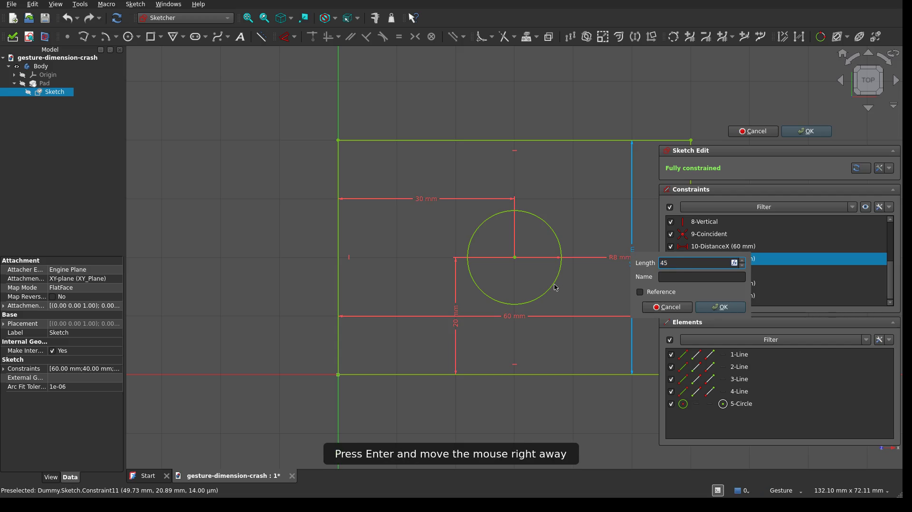

Tried against upstream main f69b1eb0648: reproduced

Reproduced: Yes
f69b1eb0648), the 26.3rc2 AppImage and the 1.1.4 AppImage. All three show the reporter's backtrace: EventQueue::forwardAll() called from AwaitingMoveState::react. It's not specific to the AppImage, and it's not a 26.3 regression.forwardAll() is still using it. The replay design dates back to the 2019 Gesture rewrite (8a99785477c).FreeCAD ran on an off-screen X display and was driven with real X input (XTest mouse and keyboard events), not scripted calls. The model is a PartDesign Body with a padded sketch: a 60 × 40 mm rectangle and an 8 mm radius hole, fully dimensioned. It's attached as gesture-dimension-crash.FCStd.
| Build | Result |
|---|---|
Upstream main f69b1eb0648, built from source |
SIGSEGV on the first attempt, 2 of 2 runs |
26.3rc2 AppImage (9fb16e7f9) |
SIGSEGV on the first attempt, 2 of 2 runs |
| 1.1.4 AppImage (the reporter's "last known good") | SIGSEGV on the first attempt, 2 of 2 runs, same forwardAll() frame |
Main f69b1eb0648 with the patch below |
No crash: 3 runs × 4 edits (9 dialogs opened, 9 survived, values applied) |
Backtrace on main (gdb attached):
#0 Gui::GestureNavigationStyle::EventQueue::forwardAll()
#1 Gui::GestureNavigationStyle::AwaitingMoveState::react(Event const&)
#2 boost::statechart::simple_state<AwaitingMoveState, ...>::react_impl
#3 boost::statechart::state_machine<NaviMachine, IdleState>::process_event
#4 Gui::GestureNavigationStyle::processSoEvent(SoEvent const*)
#5 Gui::NavigationStyle::processEvent(SoEvent const*)
#6 Gui::View3DInventorViewer::processSoEvent(SoEvent const*)
#7 SIM::Coin3D::Quarter::EventFilter::eventFilter(QObject*, QEvent*)
The Gesture debug log (NavigationDebug) shows the sequence:
button1 press 100 (697,345) <- second click of the double-click
postponed: button1 press
-> AwaitingMoveState
button1 release 0 (697,345) <- refire starts: replays the press, the dialog opens
Sketcher::Solve() ... <- Enter: the value is applied
-> IdleState <- nested transition, from a mouse move, inside refire
(SIGSEGV)
On the reporter's AppImage, the faulting instruction in their first trace (react+0x4a2) reads the state machine pointer from the destroyed AwaitingMoveState object. That's the return transit<IdleState>() right after refire(). In the other two traces the fault is in forwardAll()+0xd4, the virtual destructor call in pop() on a queue that has already been emptied.
The Gesture style holds back a mouse press until it knows whether the press starts a navigation drag. On release, AwaitingMoveState::react calls refire(). That replays the held-back press through EventQueue::forwardAll(), then the release, then transits to IdleState.
In a sketch, the replayed press is the second click of a double-click on a dimension. ViewProviderSketch::editDoubleClicked() runs EditDatumDialog::exec(), which starts a nested event loop. All of this happens inside forwardAll(). The Dimension tool opens the same dialog from its click handler, so it can take the same path (not tested separately).
When Enter closes the dialog, Qt finishes the current batch of window system events before exec() returns. The main window is no longer blocked by the modal dialog, so mouse moves already in that batch are delivered to the 3D view. Each one reaches GestureNavigationStyle::processSoEvent and calls naviMachine->processEvent() again, while the outer react() is still running.
The machine is still in AwaitingMoveState. With no buttons down and the pointer more than 5 px from the press, that state calls refire() and transits to IdleState. Leaving the state runs ~AwaitingMoveState(), which empties the queue with discardAll(). Back in the outer call:
forwardAll() pops from an empty queue (crash in forwardAll), orreact() continues on a destroyed object (crash at its transit).The timing explains "hard to reproduce": the moves have to land in the same event batch as the key or click that closes the dialog. A high-rate mouse makes that more likely.
This is the same kind of bug as #24869, fixed in #25548. That fix changed the navigation context menu from exec() to popup(). Any other nested event loop reached while events are being replayed still re-enters the machine.
Not reproduced: right-clicking for the sketch context menu, then clicking outside it to close it. On Qt 6 with X11, that click is not passed on to the 3D view.
Don't feed the state machine while it's already handling an event. An event that arrives from a nested event loop goes to the base navigation style instead, as IdleState would forward it anyway. The patch applies cleanly to main f69b1eb0648 and was built and tested there:
diff --git a/src/Gui/Navigation/GestureNavigationStyle.cpp b/src/Gui/Navigation/GestureNavigationStyle.cpp
--- a/src/Gui/Navigation/GestureNavigationStyle.cpp
+++ b/src/Gui/Navigation/GestureNavigationStyle.cpp
@@ -76,6 +76,7 @@
#include <App/Application.h>
#include <Base/Interpreter.h>
#include <Base/Console.h>
+#include <Base/Tools.h>
#include "GestureNavigationStyle.h"
#include "Application.h"
@@ -1050,6 +1051,12 @@
if (!smev.flags->processed) {
+ // A dialog opened while postponed events are replayed runs a nested event loop. Events it
+ // delivers must not re-enter the state machine, or the running state is destroyed.
+ if (inNaviMachine) {
+ return superclass::processSoEvent(ev);
+ }
+ Base::StateLocker lock(inNaviMachine);
this->naviMachine->processEvent(smev);
}
if (!smev.flags->propagated && !smev.flags->processed) {
diff --git a/src/Gui/Navigation/GestureNavigationStyle.h b/src/Gui/Navigation/GestureNavigationStyle.h
--- a/src/Gui/Navigation/GestureNavigationStyle.h
+++ b/src/Gui/Navigation/GestureNavigationStyle.h
@@ -100,6 +100,8 @@
protected: // members variables
std::unique_ptr<NaviMachine> naviMachine;
EventQueue postponedEvents;
+ /// true while naviMachine is handling an event; see processSoEvent
+ bool inNaviMachine = false;
// settings:
/// if false, tilting with touchscreen gestures will be disabled
The button-state tracking above this point still runs for every event, so the up/down state stays correct. The Maya Gesture style doesn't use the state machine and isn't affected.
The patch was applied to a source build of main f69b1eb0648 and built incrementally.
There is no good-to-bad range to bisect: 1.1.4, the reporter's last known good version, crashes the same way with the same steps. The postponed-event replay in AwaitingMoveState (refire() and EventQueue::forwardAll()) comes from the Gesture style rewrite 8a99785477c (2019, in 0.19). Any modal dialog opened from a replayed click can be re-entered this way. Because the crash depends on event timing, it shows up more or less often from one setup to another, which fits the reporter seeing 1.1.4 as good.